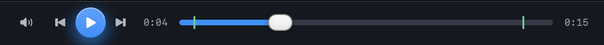
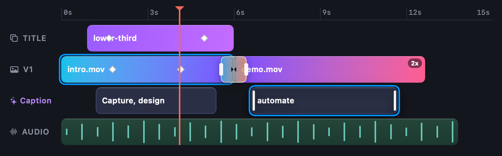
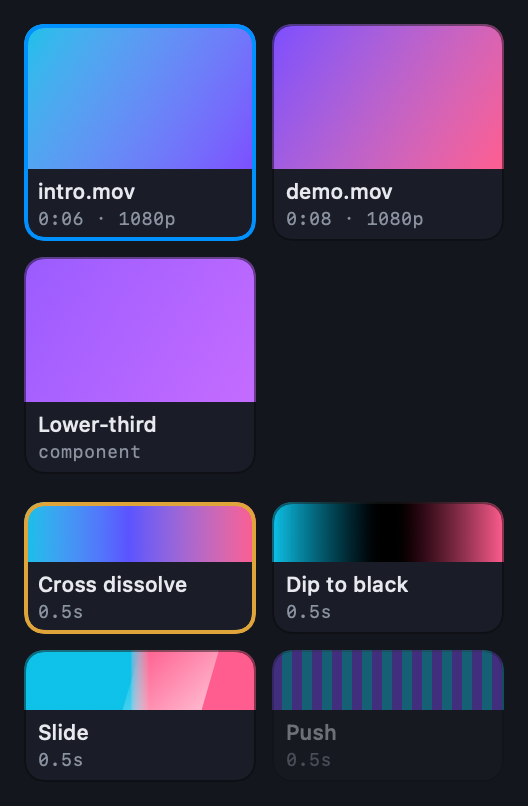
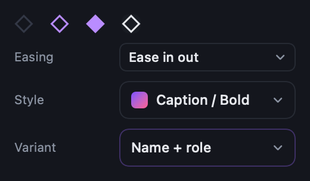
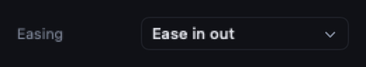

The video kit beside the mock
Left: the mock's own classes. Right: the SwiftUI piece the app ships, at the same width and with the same data.
Transport · .transport, .scrub
kit · VideoKit.TransportBar
Timeline · .ruler, .track .tl, .clip, .kfm, .speed, .xband, .wave, .playhead
kit · VideoKit.TrackRow / TrackHeader / TimeRuler / ClipBar / TransitionBand / Playhead
Picker tiles · .libgrid, .libtile, .libtile.tt
mock
intro.mov0:06 · 1080p
demo.mov0:08 · 1080p
Lower-thirdcomponent
Cross dissolve0.5s
Dip to black0.5s
Slide0.5s
Push0.5s
kit · VideoKit.TileGrid / Tile / TransitionThumbnail
Key diamond and dropdown row · .kfkey, .irow, .select
mock
EasingEase in out
Style Caption / Bold
VariantName + role
kit · VideoKit.KeyDiamond / FieldRow / SelectFace (and DropdownRow, live menu, below)

